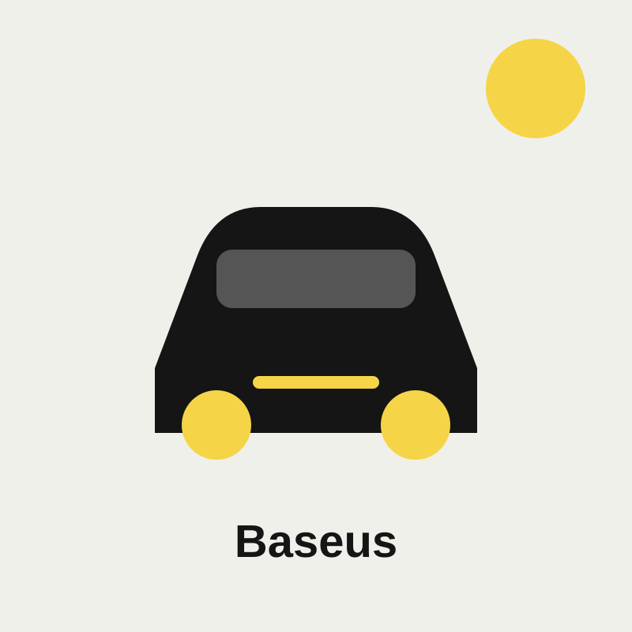

شاحن سيارة UGREEN بقدرة 50W
منتج متوفر ضمن كتالوج CABL، راجع المواصفات والتوافق قبل إتمام الطلب.
حافظ على طاقة هاتفك أثناء التنقل مع شاحن سيارة USB-C أو متعدد المنافذ. افحص توافق منفذ سيارتك وقدرة الشحن قبل الطلب.
تصفح كتالوج CABL
منتج متوفر ضمن كتالوج CABL، راجع المواصفات والتوافق قبل إتمام الطلب.
منتج متوفر ضمن كتالوج CABL، راجع المواصفات والتوافق قبل إتمام الطلب.
منتج متوفر ضمن كتالوج CABL، راجع المواصفات والتوافق قبل إتمام الطلب.
تحقق من نوع المنفذ والقدرة بالواط ومعيار الشحن السريع والتوافق مع هاتفك. لا تعني القدرة الأعلى أنها مناسبة لكل جهاز؛ اتبع مواصفات الهاتف والكابل، واختر منتجًا أصليًا من علامة موثوقة.
يعرض CABL معلومات المنتج وخيارات الشحن المتاحة أثناء إتمام الطلب. يمكنك طلب شاحن جوال أونلاين والتواصل مع فريق CABL للتأكد من التوصيل إلى مدينتك في اليمن.